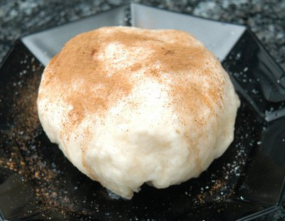

| Zutaten für 3 Personen: | |
| 500 g | Mehl |
| 3 dl | Wasser warm |
| 20 g | Hefe |
| 1 EL | Zucker |
| 1 Prise | Salz |
| Powidl oder Zwetschgenmus, mit Zitronenschale und evtl. Zucker anrühren. | |
| Zitronenschale | |
| Zucker | |
| Zimt | |
Frischhefe mit 1 dl Wasser und Zucker anmachen, ca. 15 Minuten wirken lassen. Hefeteig vorbereiten und ca. 45 Minuten aufgehen lassen
Aus dem Hefeteig 6 ca. faustgrosse Knödel präparieren. Powidlmasse ins Innere hinein operieren. In heissem leicht gesalzenem Wasser ziehen lassen, nach ca. 5 Minuten wenden, nochmals 5 Minuten ziehen lassen. Mit Zimt und Zucker und geschmolzener Butter servieren.
Herbert Eigenmann, Code: GRM
Schmeckte OK. RE 18.12.2010
@LINKBACK_TAG@ @WAKELOCK@